Sandwicherie · petite restauration · Namur
La Grignot'
Tout est fait maisonSandwichs libanais montés devant vous, chawarma découpé à la broche, paninis grillés, assiettes et salades. Rue Saint-Loup, dans le piétonnier, à deux pas de la place Saint-Aubain.
Du lundi au samedi · fermé le dimanche
- Salle à l'étage
- Rapide et efficace à midi
- Ingrédients frais
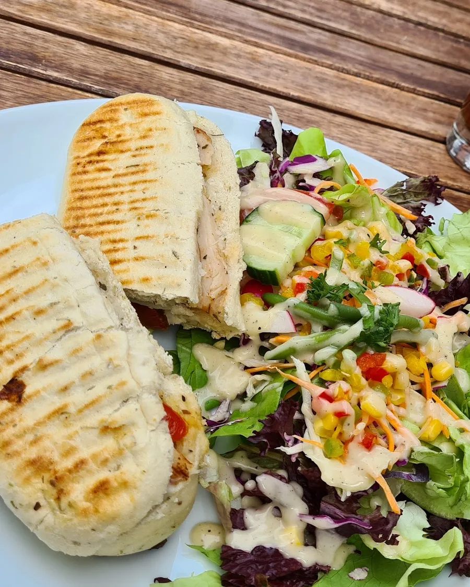
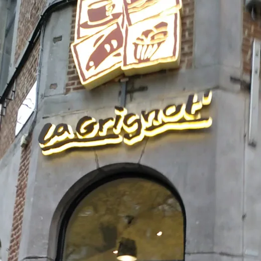
Sandwicherie
Petite restauration
Tout est fait maison
Salle à l'étage
L'affiche de la porteLa spécialité
Le chawarma, découpé à la broche sous vos yeux
À La Grignot', le sandwich libanais se prépare devant vous, avec des ingrédients frais. On vous explique ce qu'il y a dedans, et on l'adapte à votre goût. Et pour un repas plus complet : l'assiette libanaise.
- Le chawarma tourne à la brocheLa viande est découpée de la broche sur place, au moment de préparer votre sandwich.
- Le sandwich se monte devant vousLe sandwich libanais est préparé devant vos yeux, avec des ingrédients frais.
- On l'adapte à votre goûtL'équipe prend le temps d'expliquer ce qu'il y a dedans, et vous renseigne sur les allergènes.
D'après les avis Google de Meva L. et de Moumou, cités plus bas.
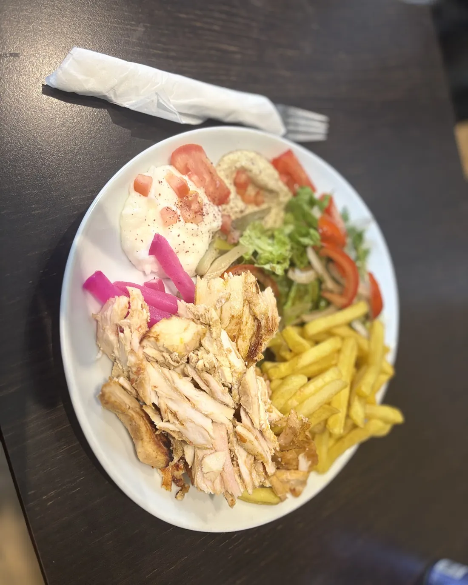
[…] J’ai pu goûter une assiette 100 % libanaise ! Juste incroyable 🤩🇱🇧Moumou, avis Google
À l'assiette
« Tout est fait maison », c'est écrit sur la porte
Paninis et croques grillés, grandes salades composées, pain grillé aux tomates et à la feta : ce que les clients photographient à table.
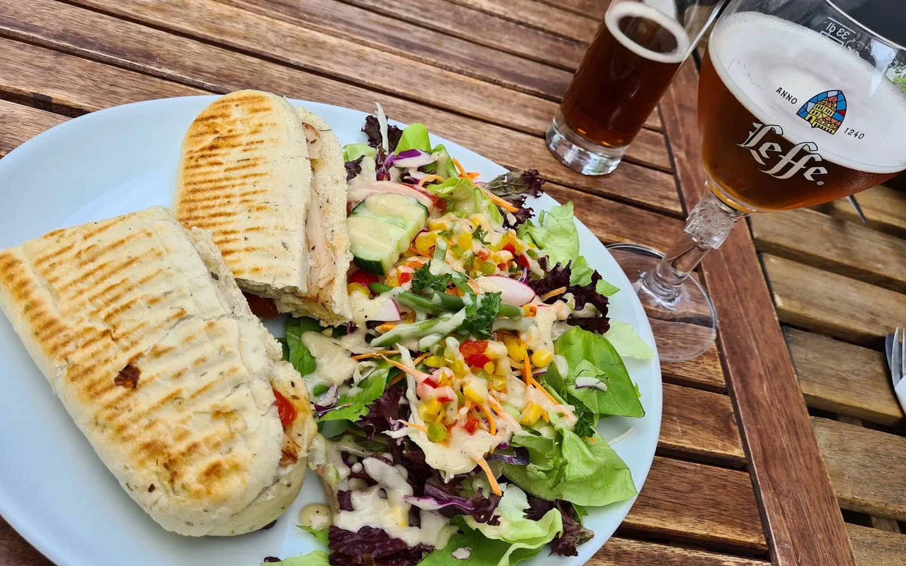
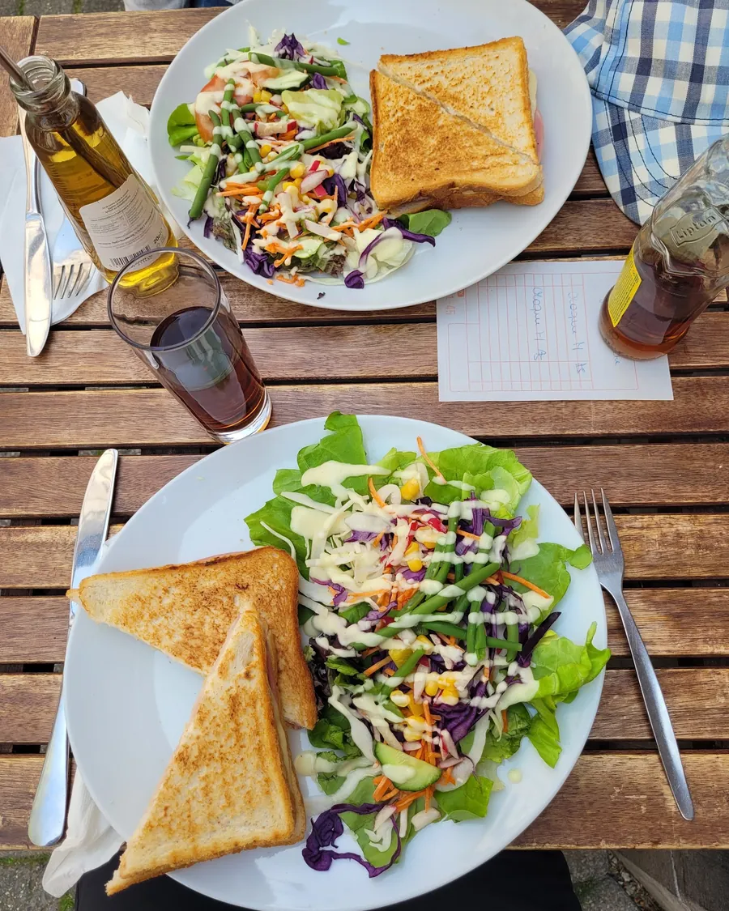
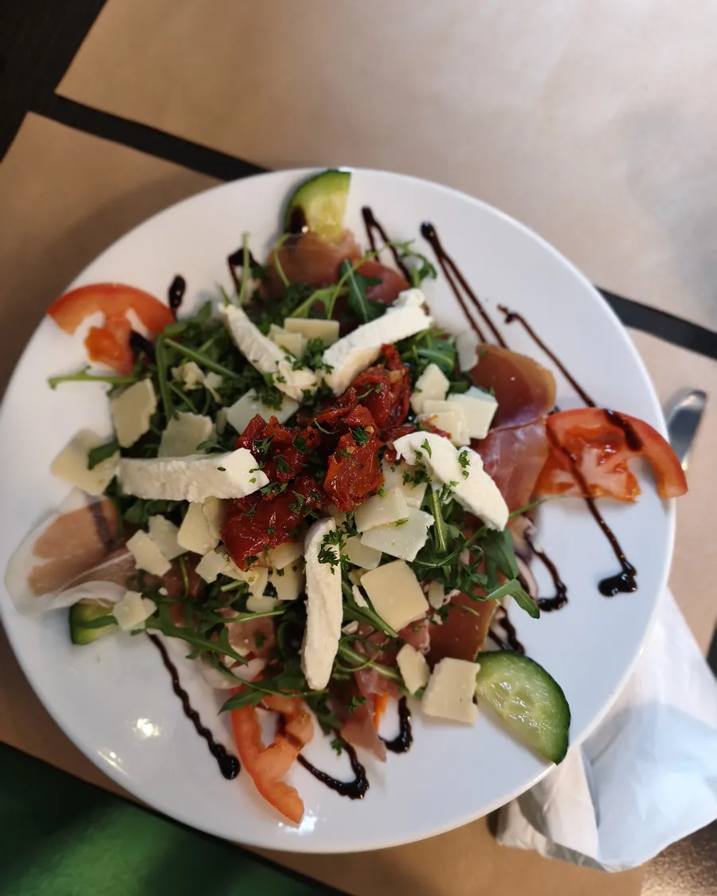
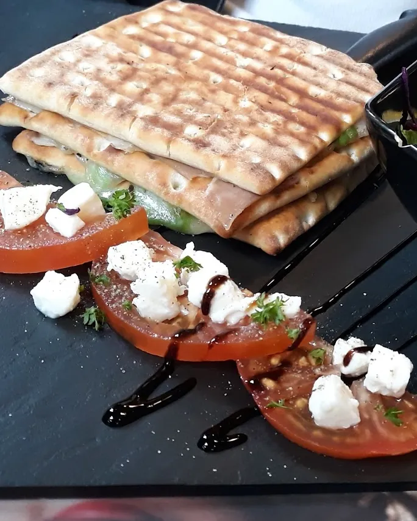
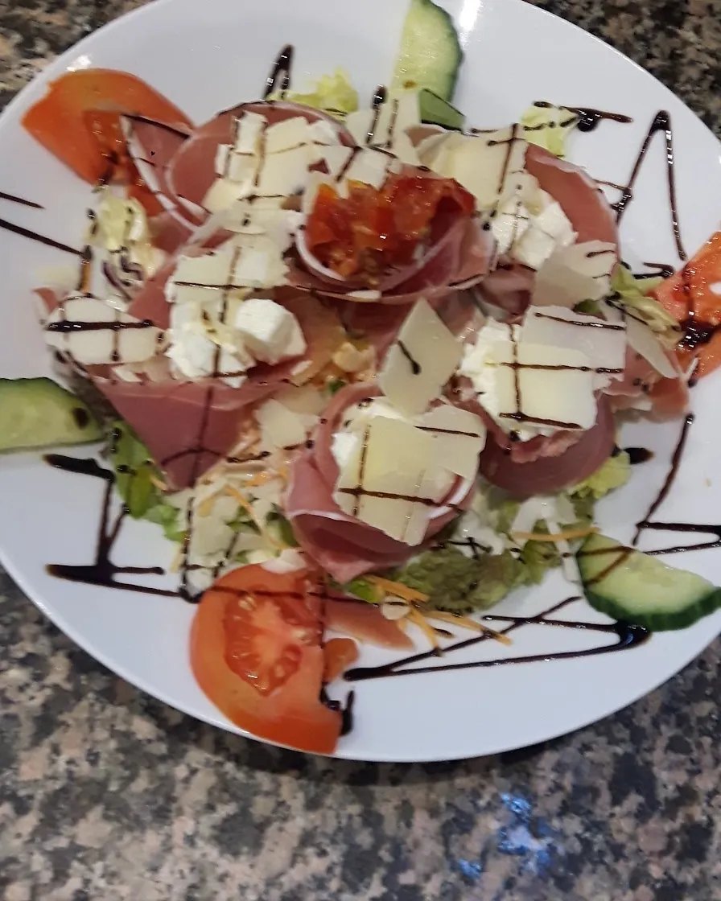
Faites glisser pour voir les assiettes
Une cliente l'a remarqué : l'équipe est « bien renseignée sur les allergènes ». Dites-le en commandant, le sandwich est préparé devant vous.
Le lieu
Une salle à l'étage, en plein piétonnier
Une maison d'angle en briques et en pierre, ses portes en arche et son enseigne dorée, au cœur du centre de Namur. Une salle claire aux grandes fenêtres, et une salle à l'étage, comme l'annonce l'affiche de la porte.
« […] Quand on a peu de temps pour manger, on apprécie particulièrement un service rapide et efficace, et c’était tout à fait le cas ici. […] »Grégory V., avis Google, un samedi midi, pendant la pause d'une formation
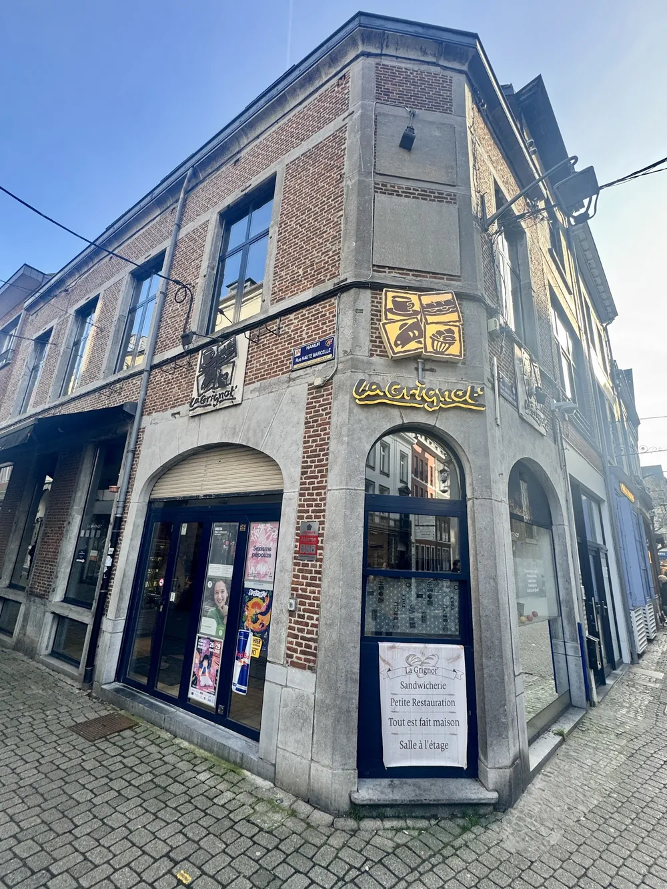
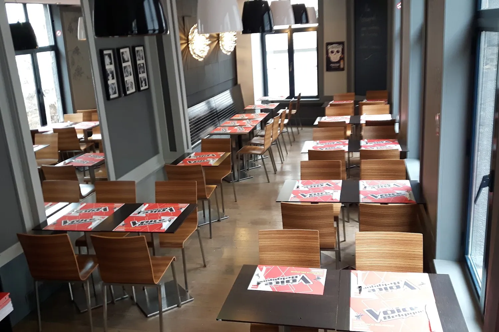
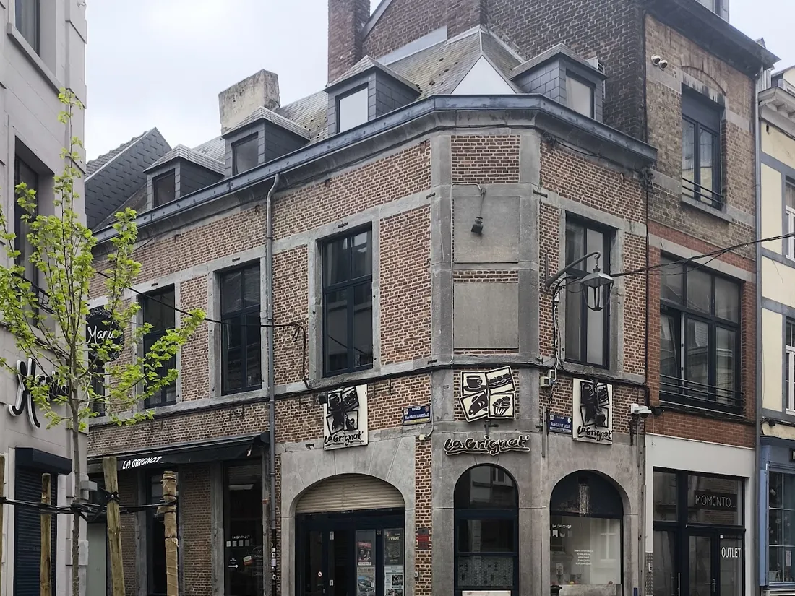
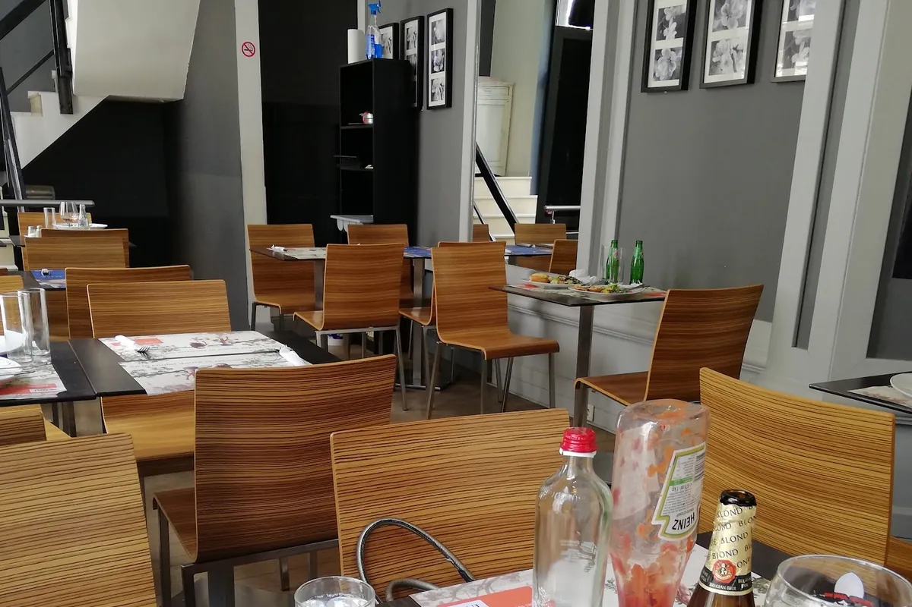
Réserver
Votre table de midi, gardée d'avance
Une pause courte entre deux réunions, un dîner entre collègues : le jour, l'heure, le nombre de personnes, et la table vous attend.
Avis
Plusieurs fois par semaine, pour certains
Ce que les clients écrivent sur Google après leur passage à La Grignot'.
Horaires et accès
Ouvert dès 8 h, du lundi au samedi
| lundi | 8 h – 15 h 30 |
|---|---|
| mardi | 8 h – 15 h 30 |
| mercredi | 8 h – 15 h 30 |
| jeudi | 8 h – 15 h 30 |
| vendredi | 8 h – 15 h 30 |
| samedi | 9 h 30 – 16 h |
| dimanche | fermé |
Le matin, croissants et pains au chocolat sont à l'affiche de la vitrine.
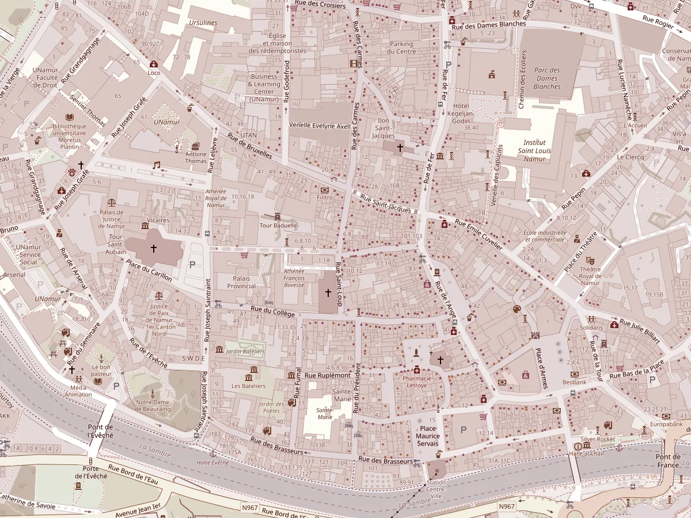
Itinéraire © OpenStreetMapEn plein centre
Dans le piétonnier, à deux pas de la place Saint-Aubain et de l'église Saint-Loup.
Une question ?
Un groupe, une allergie, une commande : 081 37 15 07 ou par e-mail.